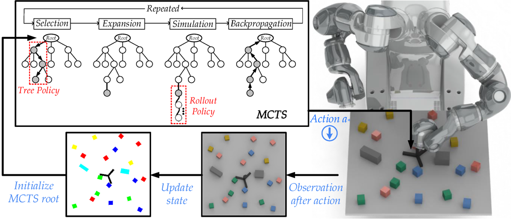

Multi-Object Rearrangement with Monte Carlo Tree Search:
A Case Study on Planar Nonprehensile Sorting
IROS 2020
-
Haoran Song*
HKUST -
Joshua A. Haustein*
KTH -
Weihao Yuan
HKUST -
Kaiyu Hang
Yale -
Michael Y. Wang
HKUST -
Danica Kragic
KTH -
Johannes A. Stork
Örebro Univ.
Abstract
In this work, we address a planar non-prehensile sorting task. Here, a robot needs to push many densely packed objects belonging to different classes into a configuration where these classes are clearly separated from each other. To achieve this, we propose to employ Monte Carlo tree search equipped with a task-specific heuristic function. We evaluate the algorithm on various simulated and real-world sorting tasks. We observe that the algorithm is capable of reliably sorting large numbers of convex and non-convex objects, as well as convex objects in the presence of immovable obstacles.
Technical Video
Architecture
We demonstrate the sorting planner’s scheme for real-world execution.
